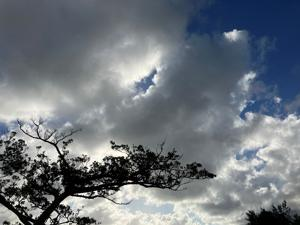
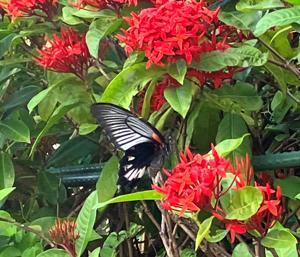
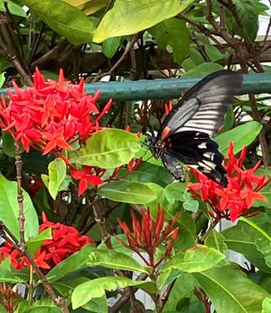

うるがいの話 ある日
最新: 販売価格の話【うるがいの話 ある日】とは 一日だけのプログです
『うるがいの話』の最新一日だけのプログで、通信料が少なく経済的だ。カニの画像をクリックすると全ての日付が載る『うるがいの話』サイトを表示します
|
|
【うるがいの話】 うるがい(ｳﾙｶﾞｲ urugai)とは、『もずくがに』の名前でとても大きくなります。 |
|---|---|
|
|
【カミマヤーの話】 猫のことを方言でマヤーといいます。カミマヤー（kamimayaa）とは、神の猫のことです。 |
|
【たながぁの音楽】 たながぁ（ﾀﾅｶﾞｰ tanagaa）とは手長えびのことで、何種類かあり大きいのは車 エビぐらいになります。 |

|
【ぶながぁの話】 ぶながぁ(ﾌﾞﾅｶﾞｰ bunagaa)とは、赤い髪の毛、赤い身体、そして身長は１ｍ２０ｃｍ ぐらい、川の蟹を食べているの目撃された。場所は沖縄県国頭郡大宜味村のと ある村僕の隣近所に住んでいる爺さんから、聞いた話です。 |
|
|
【ギーマの話】 ギーマ(giima)とは、山原の里山に咲くスズランに似た、 花を付けます。実は食べられます、 気が付くと口の周りが紫になっています。 |
2023年07月14日 (金）販売価格の話
15:32
  
ナンコウ３０ｇをドラッグイレブンで買う。帰ってから、ふく薬品のレシー
トと比較した。
ドラッグイレブン 1,383円
ふく薬品 1,026円
差額 357円
これって、なんだろう。そして、これから薬はふく薬品で買うことにする。
ヨメが、利用していた調子の悪いノートパソコンを、リフレッシュという手
順で初期化した。４時間ほどで無事終了、ほとんど最インストール状態であ
る。調子良さそうだ、半角全角漢字のボタンはなく（機能しない）、空白ス
ペースは、カバーが取れ裸のボタンだけだが、２０１０年購入まだまだ使え
そうである。
１５時２７分 ビットコインの総資産 ￥１２、５０５（↑２７８）